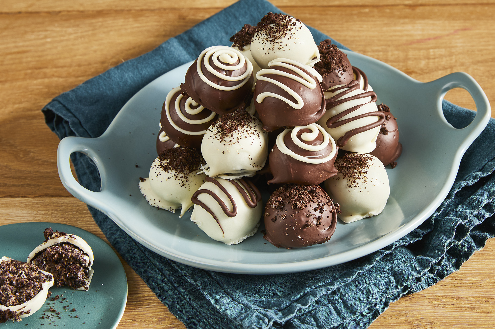

Oreo Cookie Balls

Description
Oh boy, I am dedicated to making this recipe book all about oreo desserts.
I just saw this in allrecipes, and I gotta say that it looks delicious.
Ingredients
- 1 (8 ounce) package cream cheese, softened
- 36 OREO Cookies, finely crushed
- 16 ounces semi-sweet baking chocolate, melted
Steps
- Mix cream cheese and crushed cookies in a large bowl until well-blended.
- Use your hands to shape mixture into 48 (1-inch) balls; place on a tray and freeze until thoroughly chilled, about 10 minutes.
- Dip balls in melted chocolate; place in a single layer in a shallow waxed paper-lined pan.
- Refrigerate 1 hour or until firm. Store in a covered container in the refrigerator.